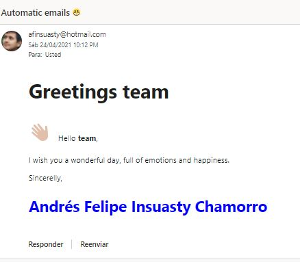

Automatic reports through emails üìß
Impress your boss with automatic reports in their emails.
Packages required:
blastula: Package to send emailskeyring: Set credentials of email üîêRmardown: Create automatic reports
Read Rmarkdown file
set directory of your Rmarkdown file
tempreport <- file.path(...) Render mail with tempfile
# email <- blastula::render_email(input = tempreport)send email
*credentials are explained at the end of the post!
email %>% blastula::smtp_send(from="from.username@hotmail.com", to="to.username@hotmail.com", # c() to send 2 or more subject = glue("Automatic emails \U0001F600"), credentials=creds_key("outlook"), # given in credentials verbose = FALSE)

*Credentials
Emails are sent throught smtp, this requires a port (specified by your company or by email vendor - for outlook is 587).
# blastula::create_smtp_creds_key(
# "outlook","your.username@hotmail.com",provider = "outlook",port = 587)`